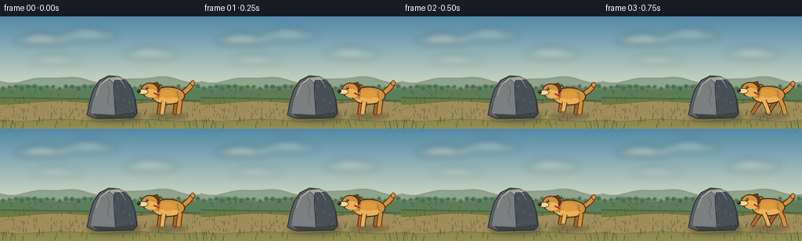
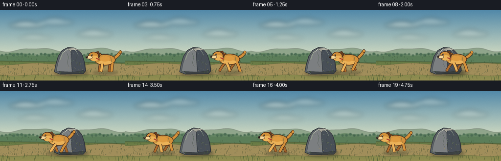
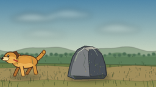
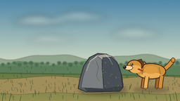

CODING AGENTS AS PIXEL WORLD MODELS
traex/DeepSeek-V4.1-Flash · dynamic_spatial_relationship_0004
点击播放 · 原生 RGB 像素
此结果可播放，但该运行尚未通过最终提交审核。页面展示不代表评测通过。
逐轮保存的候选
回放视频、检查图与代码变化。
每份候选均可单独播放。实际图片检查记录在下方工具轨迹中。
候选 01播放与检查图
点击播放 · 原生 RGB 像素


展开代码变化
--- 上一保存版本
+++ 本次保存版本
@@ -0,0 +1,401 @@
+from pathlib import Path
+import math
+
+import imageio
+import numpy as np
+from PIL import Image, ImageDraw, ImageFilter
+
+import artifact_io
+
+
+CASE_DIR = Path(__file__).resolve().parent
+WIDTH = 256
+HEIGHT = 144
+FRAMES = 20
+FPS = 4.0
+SCALE = 4
+CANVAS = (WIDTH * SCALE, HEIGHT * SCALE)
+
+
+def pt(x, y):
+ return (round(x * SCALE), round(y * SCALE))
+
+
+def points(values):
+ return [pt(x, y) for x, y in values]
+
+
+def polygon(draw, values, fill, outline=None, width=1):
+ draw.polygon(points(values), fill=fill)
+ if outline is not None:
+ draw.line(
+ points(values) + [points(values)[0]],
+ fill=outline,
+ width=max(1, round(width * SCALE)),
+ joint="curve",
+ )
+
+
+def ellipse(draw, box, fill, outline=None, width=1):
+ draw.ellipse(
+ tuple(round(value * SCALE) for value in box),
+ fill=fill,
+ outline=outline,
+ width=max(1, round(width * SCALE)) if outline else 0,
+ )
+
+
+def stroke(draw, values, fill, width, joint="curve"):
+ draw.line(
+ points(values),
+ fill=fill,
+ width=max(1, round(width * SCALE)),
+ joint=joint,
+ )
+
+
+def smoothstep(value):
+ value = max(0.0, min(1.0, value))
+ return value * value * (3.0 - 2.0 * value)
+
+
+def make_background():
+ yy = np.arange(CANVAS[1], dtype=np.float32)[:, None] / (CANVAS[1] - 1)
+ horizon = 94.0 / HEIGHT
+ t = np.clip(yy / horizon, 0.0, 1.0)
+ top = np.array([82, 137, 169], dtype=np.float32)
+ low = np.array([211, 220, 194], dtype=np.float32)
+ sky = top[None, None, :] * (1.0 - t[:, :, None]) + low[None, None, :] * t[:, :, None]
+ image = np.repeat(sky, CANVAS[0], axis=1)
+
+ rng = np.random.default_rng(20261110)
+ grain = rng.normal(0.0, 2.2, (CANVAS[1], CANVAS[0], 1))
+ image = np.clip(image + grain, 0, 255)
+
+ # The ground gets its own softly textured color field.
+ ground_y = np.arange(CANVAS[1], dtype=np.float32)[:, None]
+ ground_t = np.clip((ground_y - horizon * CANVAS[1]) / ((1.0 - horizon) * CANVAS[1]), 0, 1)
+ near = np.array([89, 116, 65], dtype=np.float32)
+ far = np.array([149, 143, 82], dtype=np.float32)
+ ground = near[None, None, :] * (1.0 - ground_t[:, :, None]) + far[None, None, :] * ground_t[:, :, None]
+ ground = np.repeat(ground, CANVAS[0], axis=1)
+ texture = rng.normal(0.0, 4.0, (CANVAS[1], CANVAS[0], 1))
+ ground = np.clip(ground + texture, 0, 255)
+ mask = ground_y[:, :, None] >= horizon * CANVAS[1]
+ image = np.where(mask, ground, image)
+
+ return Image.fromarray(image.astype(np.uint8), "RGB").convert("RGBA")
+
+
+def add_clouds(image):
+ layer = Image.new("RGBA", CANVAS, (0, 0, 0, 0))
+ draw = ImageDraw.Draw(layer)
+ clouds = [
+ (18, 25, 92, 36, 74),
+ (78, 18, 151, 31, 50),
+ (157, 42, 230, 55, 48),
+ (36, 52, 108, 62, 34),
+ ]
+ for x0, y0, x1, y1, alpha in clouds:
+ ellipse(draw, (x0, y0, x1, y1), (246, 242, 222, alpha))
+ ellipse(draw, (x0 + 14, y0 - 3, x1 - 20, y1 - 4), (255, 251, 235, alpha + 14))
+ layer = layer.filter(ImageFilter.GaussianBlur(4.5 * SCALE))
+ return Image.alpha_composite(image, layer)
+
+
+def add_landscape(image):
+ layer = Image.new("RGBA", CANVAS, (0, 0, 0, 0))
+ draw = ImageDraw.Draw(layer)
+
+ far_ridge = [(-8, 96)]
+ for x in range(-8, 265, 4):
+ y = 81.0 + 3.2 * math.sin(x * 0.052 + 0.8) + 1.4 * math.sin(x * 0.11)
+ far_ridge.append((x, y))
+ far_ridge.append((264, 101))
+ polygon(draw, far_ridge, (132, 155, 128, 210))
+
+ near_ridge = [(-8, 104)]
+ for x in range(-8, 265, 3):
+ y = 89.5 + 2.1 * math.sin(x * 0.077 + 2.0) + 0.9 * math.sin(x * 0.19)
+ near_ridge.append((x, y))
+ near_ridge.append((264, 108))
+ polygon(draw, near_ridge, (91, 126, 91, 235))
+
+ # Small tree crowns soften the horizon without competing with the subjects.
+ for x in range(4, 258, 8):
+ y = 91.0 + 1.5 * math.sin(x * 0.27)
+ radius = 2.2 + 0.9 * (0.5 + 0.5 * math.sin(x * 0.9))
+ ellipse(draw, (x - radius, y - radius, x + radius, y + radius * 0.7), (54, 91, 66, 220))
+ layer = layer.filter(ImageFilter.GaussianBlur(0.65 * SCALE))
+ image = Image.alpha_composite(image, layer)
+
+ # Curving sandy trail across the meadow.
+ path_layer = Image.new("RGBA", CANVAS, (0, 0, 0, 0))
+ pdraw = ImageDraw.Draw(path_layer)
+ top_edge = []
+ bottom_edge = []
+ for x in range(-4, 261, 4):
+ top_edge.append((x, 110.5 + 2.2 * math.sin(x * 0.043 + 1.5)))
+ bottom_edge.append((x, 133.0 + 1.2 * math.sin(x * 0.061)))
+ polygon(pdraw, top_edge + list(reversed(bottom_edge)), (164, 143, 92, 232))
+
+ rng = np.random.default_rng(411)
+ for _ in range(115):
+ x = rng.uniform(0, WIDTH)
+ y = rng.uniform(112, 133)
+ radius = rng.uniform(0.25, 0.9)
+ shade = int(rng.integers(98, 145))
+ ellipse(
+ pdraw,
+ (x - radius, y - radius * 0.55, x + radius, y + radius * 0.55),
+ (shade, shade - 12, shade - 35, 120),
+ )
+ path_layer = path_layer.filter(ImageFilter.GaussianBlur(0.28 * SCALE))
+ return Image.alpha_composite(image, path_layer)
+
+
+def add_grass(image):
+ layer = Image.new("RGBA", CANVAS, (0, 0, 0, 0))
+ draw = ImageDraw.Draw(layer)
+ rng = np.random.default_rng(1937)
+ for _ in range(165):
+ x = rng.uniform(0, WIDTH)
+ y = rng.uniform(91, 143)
+ depth = (y - 91) / 52
+ length = 1.1 + depth * 3.2 + rng.uniform(0, 1.7)
+ lean = rng.uniform(-1.1, 1.1)
+ color = (
+ int(58 + depth * 24),
+ int(92 + depth * 23),
+ int(53 + depth * 8),
+ int(150 + depth * 80),
+ )
+ stroke(draw, [(x, y), (x + lean * 0.45, y - length * 0.55), (x + lean, y - length)], color, 0.55)
+
+ # A few sunlit blades near the camera.
+ for x, y, length in [(8, 142, 9), (19, 141, 7), (237, 143, 10), (248, 141, 8), (207, 140, 6)]:
+ stroke(draw, [(x, y), (x - 1.2, y - length * 0.55), (x - 2.2, y - length)], (151, 153, 78, 210), 0.7)
+ layer = layer.filter(ImageFilter.GaussianBlur(0.22 * SCALE))
+ return Image.alpha_composite(image, layer)
+
+
+def add_rock(image):
+ shadow = Image.new("RGBA", CANVAS, (0, 0, 0, 0))
+ sdraw = ImageDraw.Draw(shadow)
+ ellipse(sdraw, (111, 122, 181, 135), (44, 49, 43, 105))
+ shadow = shadow.filter(ImageFilter.GaussianBlur(3.2 * SCALE))
+ image = Image.alpha_composite(image, shadow)
+
+ layer = Image.new("RGBA", CANVAS, (0, 0, 0, 0))
+ draw = ImageDraw.Draw(layer)
+ outline = (47, 52, 57, 255)
+ outer = [
+ (111, 126), (114, 111), (119, 94), (127, 82), (139, 76),
+ (151, 77), (161, 82), (168, 92), (173, 108), (175, 124),
+ (170, 130), (123, 131),
+ ]
+ polygon(draw, outer, (91, 97, 102, 255), outline, 1.2)
+
+ left_face = [(115, 125), (118, 109), (124, 91), (136, 79), (144, 77), (147, 126)]
+ polygon(draw, left_face, (124, 127, 129, 255), (68, 73, 78, 255), 0.7)
+ top_face = [(137, 79), (150, 77), (159, 80), (167, 89), (155, 92), (145, 85)]
+ polygon(draw, top_face, (168, 166, 155, 255), (87, 88, 85, 255), 0.65)
+ right_face = [
+ (146, 82), (158, 81), (167, 90), (172, 106), (174, 124),
+ (163, 128), (148, 126), (145, 98),
+ ]
+ polygon(draw, right_face, (72, 79, 87, 255), (48, 53, 59, 255), 0.7)
+ base_face = [(120, 125), (146, 127), (170, 123), (174, 126), (170, 130), (124, 130)]
+ polygon(draw, base_face, (61, 66, 68, 255), (43, 47, 50, 255), 0.55)
+
+ # Highlights, cracks, and a little moss make the rock read as a solid object.
+ stroke(draw, [(123, 101), (128, 87), (139, 79)], (193, 190, 177, 145), 1.2)
+ stroke(draw, [(151, 79), (156, 84), (160, 92)], (221, 214, 192, 90), 0.7)
+ stroke(draw, [(136, 86), (140, 96), (137, 108), (141, 116)], (52, 57, 61, 170), 0.55)
+ stroke(draw, [(158, 92), (154, 103), (159, 114)], (46, 51, 55, 180), 0.55)
+ stroke(draw, [(166, 98), (162, 108), (164, 120)], (44, 49, 52, 150), 0.45)
+
+ rng = np.random.default_rng(807)
+ for _ in range(26):
+ x = rng.uniform(121, 169)
+ y = rng.uniform(87, 124)
+ radius = rng.uniform(0.2, 0.65)
+ ellipse(draw, (x - radius, y - radius, x + radius, y + radius), (157, 154, 143, 55))
+
+ for x, y, length in [(117, 127, 5.5), (124, 129, 4.4), (169, 128, 5.2), (163, 129, 3.8)]:
+ stroke(draw, [(x, y), (x - 1.0, y - length * 0.6), (x - 1.8, y - length)], (65, 103, 54, 220), 0.55)
+
+ return Image.alpha_composite(image, layer)
+
+
+def draw_leg(draw, hip, swing, lift, fill, outline, far=False):
+ hx, hy = hip
+ knee_x = hx + swing * 4.8 - 1.2
+ knee_y = hy + 8.0 - lift * 0.25
+ foot_x = hx + swing * 9.2 - 2.2
+ foot_y = 125.5 - lift
+ width = 4.8 if not far else 4.1
+ stroke(draw, [(hx, hy), (knee_x, knee_y), (foot_x, foot_y)], outline, width + 1.7)
+ stroke(draw, [(hx, hy), (knee_x, knee_y), (foot_x, foot_y)], fill, width)
+ ellipse(draw, (foot_x - 1.6, foot_y - 0.8, foot_x + 2.0, foot_y + 1.0), outline)
+ ellipse(draw, (foot_x - 1.15, foot_y - 0.55, foot_x + 1.55, foot_y + 0.55), fill)
+
+
+def add_dog(image, center_x, frame_index):
+ running = frame_index >= 2
+ phase = 2.0 * math.pi * (frame_index - 2) / 5.0 if running else 0.25
+ bob = 1.0 * math.cos(phase * 2.0 + 0.35) if running else 0.0
+ cy = 102.0 + bob
+
+ shadow = Image.new("RGBA", CANVAS, (0, 0, 0, 0))
+ sdraw = ImageDraw.Draw(shadow)
+ ellipse(sdraw, (center_x - 26, 124, center_x + 25, 132), (47, 54, 42, 82))
+ shadow = shadow.filter(ImageFilter.GaussianBlur(2.3 * SCALE))
+ image = Image.alpha_composite(image, shadow)
+
+ dust = Image.new("RGBA", CANVAS, (0, 0, 0, 0))
+ ddraw = ImageDraw.Draw(dust)
+ if running:
+ for index, (dx, dy, radius, alpha) in enumerate(
+ [(25, 23, 2.1, 62), (31, 20, 1.5, 48), (36, 24, 1.0, 35)]
+ ):
+ wobble = 0.8 * math.sin(frame_index * 1.3 + index)
+ ellipse(
+ ddraw,
+ (center_x + dx + wobble - radius, cy + dy - radius, center_x + dx + wobble + radius, cy + dy + radius),
+ (210, 183, 126, alpha),
+ )
+ dust = dust.filter(ImageFilter.GaussianBlur(0.8 * SCALE))
+ image = Image.alpha_composite(image, dust)
+
+ layer = Image.new("RGBA", CANVAS, (0, 0, 0, 0))
+ draw = ImageDraw.Draw(layer)
+ outline = (71, 43, 26, 255)
+ far_fur = (166, 103, 42, 255)
+ fur = (211, 145, 59, 255)
+ light_fur = (235, 178, 88, 255)
+ cream = (246, 215, 153, 255)
+
+ tail_wave = 1.2 * math.sin(phase + 0.7) if running else 0.0
+ tail = [
+ (center_x + 18, cy - 3),
+ (center_x + 25, cy - 9 + tail_wave),
+ (center_x + 31, cy - 16 + tail_wave * 1.6),
+ ]
+ stroke(draw, tail, outline, 7.0)
+ stroke(draw, tail, fur, 5.0)
+ ellipse(draw, (center_x + 28, cy - 20 + tail_wave * 1.6, center_x + 34, cy - 13 + tail_wave * 1.6), outline)
+ ellipse(draw, (center_x + 28.7, cy - 19.2 + tail_wave * 1.6, center_x + 33.3, cy - 13.8 + tail_wave * 1.6), fur)
+
+ far_swing = math.sin(phase + math.pi)
+ near_swing = math.sin(phase)
+ far_lift = max(0.0, math.cos(phase + math.pi)) * 3.8
+ near_lift = max(0.0, math.cos(phase)) * 3.8
+ if not running:
+ far_swing = near_swing = 0.0
+ far_lift = near_lift = 0.0
+
+ draw_leg(draw, (center_x + 10, cy + 7), far_swing, far_lift, (161, 100, 43, 255), outline, True)
+ draw_leg(draw, (center_x - 10, cy + 7), -near_swing, near_lift * 0.8, (174, 108, 45, 255), outline, True)
+
+ # Neck and torso.
+ polygon(
+ draw,
+ [
+ (center_x - 20, cy - 8), (center_x - 10, cy - 14),
+ (center_x - 3, cy - 8), (center_x - 6, cy + 4), (center_x - 19, cy + 2),
+ ],
+ fur,
+ outline,
+ 1.1,
+ )
+ ellipse(draw, (center_x - 22, cy - 12, center_x + 21, cy + 11), fur, outline, 1.25)
+ ellipse(draw, (center_x - 16, cy + 1, center_x + 14, cy + 9), light_fur)
+ ellipse(draw, (center_x - 10, cy - 8, center_x + 9, cy + 3), (222, 155, 64, 255))
+
+ # Shoulder and hip shading.
+ stroke(draw, [(center_x - 11, cy - 7), (center_x - 13, cy + 4)], (180, 111, 42, 150), 1.2)
+ stroke(draw, [(center_x + 11, cy - 6), (center_x + 13, cy + 4)], (173, 105, 38, 125), 1.0)
+ for offset in (-14, -8, -2, 4, 10):
+ stroke(draw, [(center_x + offset, cy - 8), (center_x + offset + 3, cy - 10)], (241, 186, 91, 90), 0.55)
+
+ # Near-side legs sit in front of the body.
+ draw_leg(draw, (center_x + 15, cy + 6), -far_swing, far_lift * 0.9, fur, outline)
+ draw_leg(draw, (center_x - 6, cy + 7), near_swing, near_lift, light_fur, outline)
+
+ # Floppy ear behind the head.
+ ear_flop = 1.2 * math.sin(phase + 1.2) if running else 0.0
+ ear = [
+ (center_x - 22, cy - 16), (center_x - 14, cy - 18),
+ (center_x - 10, cy - 10 + ear_flop), (center_x - 15, cy - 2 + ear_flop),
+ (center_x - 20, cy - 7),
+ ]
+ polygon(draw, ear, (105, 62, 34, 255), (67, 39, 23, 255), 0.8)
+ stroke(draw, [(center_x - 19, cy - 13), (center_x - 15, cy - 5 + ear_flop)], (155, 94, 48, 130), 0.7)
+
+ # Head, muzzle, nose, and eye.
+ ellipse(draw, (center_x - 35, cy - 17, center_x - 13, cy + 2), fur, outline, 1.25)
+ ellipse(draw, (center_x - 31, cy - 9, center_x - 14, cy + 2), light_fur)
+ ellipse(draw, (center_x - 39, cy - 9, center_x - 26, cy - 2), cream, outline, 0.85)
+ ellipse(draw, (center_x - 40.3, cy - 8.4, center_x - 35.5, cy - 4.0), (43, 34, 29, 255))
+ ellipse(draw, (center_x - 39.4, cy - 7.8, center_x - 37.6, cy - 6.5), (112, 103, 96, 180))
+ stroke(draw, [(center_x - 34.8, cy - 2.3), (center_x - 30.6, cy - 1.7)], (92, 57, 36, 220), 0.6)
+ ellipse(draw, (center_x - 29.2, cy - 12.0, center_x - 25.8, cy - 8.7), (49, 38, 29, 255))
+ ellipse(draw, (center_x - 28.4, cy - 11.4, center_x - 27.1, cy - 10.2), (250, 242, 213, 230))
+
+ # Warm red collar provides a strong small accent.
+ stroke(draw, [(center_x - 19, cy - 4), (center_x - 12, cy - 1)], (168, 54, 43, 255), 2.1)
+ ellipse(draw, (center_x - 14.3, cy - 0.2, center_x - 11.9, cy + 1.8), (227, 184, 70, 255), (111, 74, 30, 255), 0.45)
+
+ # A few chest and cheek fur marks.
+ for offset in (-22, -19, -16):
+ stroke(draw, [(center_x + offset, cy + 3), (center_x + offset + 1.5, cy + 6)], (250, 224, 169, 110), 0.45)
+
+ return Image.alpha_composite(image, layer)
+
+
+def add_foreground(image):
+ layer = Image.new("RGBA", CANVAS, (0, 0, 0, 0))
+ draw = ImageDraw.Draw(layer)
+ # Slightly larger, darker blades anchor the bottom edge.
+ for x, height, lean in [(3, 13, 2), (13, 10, 3), (28, 8, 2), (243, 11, -2), (252, 14, -3)]:
+ stroke(draw, [(x, 145), (x + lean * 0.45, 145 - height * 0.58), (x + lean, 145 - height)], (52, 80, 43, 225), 0.8)
+ return Image.alpha_composite(image, layer)
+
+
+def render_frame(frame_index):
+ image = make_background()
+ image = add_clouds(image)
+ image = add_landscape(image)
+ image = add_grass(image)
+ image = add_rock(image)
+
+ progress = 0.0 if frame_index < 2 else smoothstep((frame_index - 2) / (FRAMES - 3))
+ dog_center = 215.0 + (41.0 - 215.0) * progress
+ image = add_dog(image, dog_center, frame_index)
+ image = add_foreground(image)
+
+ frame = image.convert("RGB").resize((WIDTH, HEIGHT), Image.Resampling.LANCZOS)
+ return np.asarray(frame, dtype=np.uint8)
+
+
+def main():
+ frames = np.stack([render_frame(index) for index in range(FRAMES)], axis=0)
+ assert frames.shape == (FRAMES, HEIGHT, WIDTH, 3)
+ assert frames.dtype == np.uint8
+
+ artifact_io.save(frames, CASE_DIR)
+ imageio.mimsave(
+ CASE_DIR / "video.mp4",
+ frames,
+ fps=FPS,
+ codec="libx264",
+ quality=8,
+ macro_block_size=1,
+ pixelformat="yuv420p",
+ )
+ print(f"wrote {FRAMES} frames and video.mp4 at {WIDTH}x{HEIGHT}, {FPS:g} fps")
+
+
+if __name__ == "__main__":
+ main()
可观测工具轨迹
实际执行的命令与返回图片。
命令 1exit 0
/bin/bash -lc "pwd && rg --files -g '"'!*.mp4'"' -g '"'!*.mov'"' -g '"'!*.png'"' -g '"'!*.jpg'"' | sort | head -200"
命令 2exit 0
/bin/bash -lc "sed -n '1,240p' prompt.txt"
命令 3exit 0
/bin/bash -lc "sed -n '1,260p' GENERATION_RULES.md"
命令 4exit 0
/bin/bash -lc 'cat task_spec.json'
命令 5exit 0
/bin/bash -lc "sed -n '1,280p' artifact_io.py"
命令 6exit 0
/bin/bash -lc "sed -n '1,260p' player_template.html"
命令 7exit 0
/bin/bash -lc "find . -maxdepth 2 -type f -printf '%p %s bytes\\n' | sort"
命令 8exit 0
/bin/bash -lc 'command -v ffmpeg || true; ffmpeg -version 2>/dev/null | head -2 || true'
命令 9exit 0
/bin/bash -lc "python - <<'PY'
import PIL, numpy
print('PIL', PIL.__version__)
print('numpy', numpy.__version__)
try:
import imageio
print('imageio', imageio.__version__)
except Exception as e: print('no imageio', e)
PY"命令 10exit 0
/bin/bash -lc "python - <<'PY'
import imageio
from imageio import v3
for fmt in ('ffmpeg','FFMPEG'):
try:
p=imageio.get_writer('/tmp/pw_test.mp4', format=fmt, fps=4)
print('writer', fmt, p)
p.close()
break
except Exception as e: print('fail', fmt, repr(e))
PY
ls -l /tmp/pw_test.mp4 2>/dev/null || true"命令 11exit 0
/bin/bash -lc 'python generate.py'
命令 12exit 0
/bin/bash -lc "python - <<'PY'
from pathlib import Path
import imageio.v3 as iio
import numpy as np
p=Path('video.mp4')
frames=iio.imread(p, plugin='FFMPEG')
print('video:', p.stat().st_size, 'bytes')
print('shape:', frames.shape, 'dtype:', frames.dtype)
print('frame means:', np.round(frames.mean(axis=(1,2,3)), 2).tolist())
print('frame deltas:', int(np.abs(np.diff(frames.astype(np.int16), axis=0)).sum()))
PY"命令 13exit 0
/bin/bash -lc "python - <<'PY'
from pathlib import Path
import numpy as np
from PIL import Image
files=sorted(Path('frames').glob('*.png'))
print('png frames:', len(files))
for f in (files[0], files[-1]):
im=np.asarray(Image.open(f))
print(f.name, im.shape, im.dtype, tuple(im[72,128]))
for name in ('pixels.npz','inspection.png','transition_check.png','index.html'):
p=Path(name)
print(name, p.exists(), p.stat().st_size if p.exists() else 0)
PY"命令 14exit 0
/bin/bash -lc 'git status --short 2>/dev/null || true'
视觉工具实际返回图片 1

视觉工具实际返回图片 2

视觉工具实际返回图片 3

视觉工具实际返回图片 4

保存候选 1 份；完成命令 14 次；可验证图片返回 4 张。原始 API 响应与完整日志保留在本地。